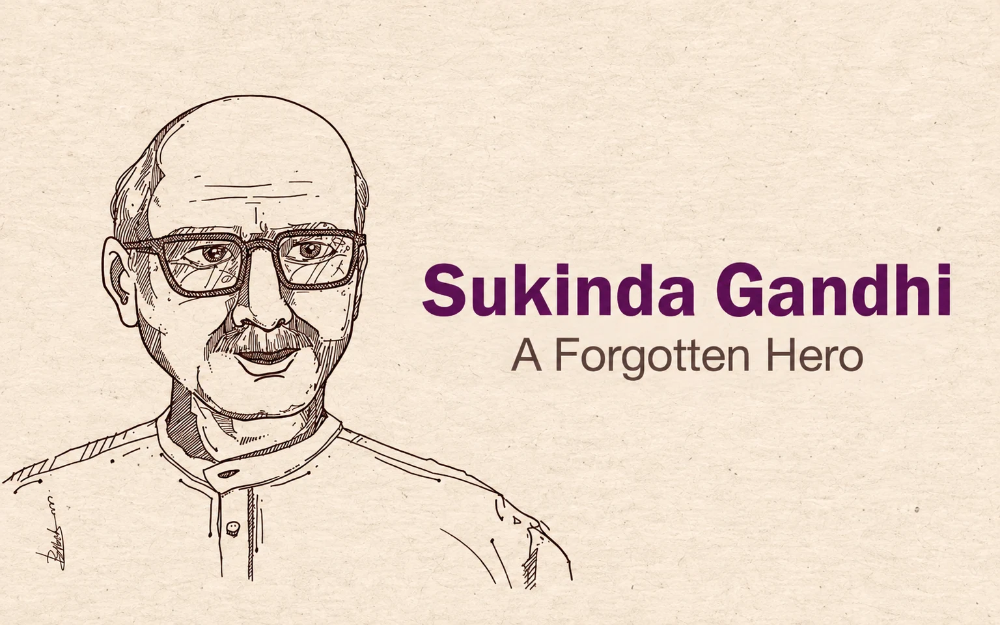

Sukinda Gandhi: A Forgotten Hero

During British rule, Sukinda was a princely state adjacent to Keonjhar state on one side, Dhenkanal and Balarampur state on the other. The Singhdeo royal family were ruling over the kingdom. The area was famous for its large forest cover and mineral resources.
My maternal grandfather late Duryodhan Ray was once upon a time a revenue official under the King of Sukinda. When Mahatma Gandhi called for the Civil Disobedience Movement in 1930 it was echoed in the nook and corner of the country. He was then attracted towards the Gandhian philosophy and freedom struggle. In 1934 Gopabandhu Choudhury and Rama Devi established an Ashram in Bari in Jajpur District as per the call of Mahatma Gandhi to go back to the villages and organize constructive works and awareness among the people.
This idea touched his heart and he decided to implement it in Sukinda. Soon after, in September 1938 the Cuttack District Peasant Conference was held in Jenapur attended by leading freedom fighters of the State. It gave momentum to the public agitation in adjoining areas including Sukinda. Sometime before the conference leaders like Nabakrushna Chowdhury, Malati Devi, Surendra Nath Dwivedi, Gouranga Charan Das addressed the peasants in Sukinda, Dharmasala, and Gada Madhupur area and organized them against the local rulers who were acting as agents of the British government.
In the above backdrop, he finally made up his mind and resigned from his job to join the freedom movement. He came in contact with the leading freedom fighters like Gopabandhu Choudhury, Rama Devi, Naba Krushna Choudhury, Malati Devi, Surendra Dwivedi, et al and established an Ashram in a remote village called Ullal which along with the surrounding villages was inhabited by scheduled caste people. He was against untouchability and gave these people free access to his house. The local people got organized under his leadership and agitated against the local ruler as well as the British government.
Many leading freedom fighters of the time used to visit this place, availing of his hospitality and encouraging the agitation. One day he was leading a procession of the agitators at Sukinda Garh which was to pass through the royal palace. The King was determined to take revenge and shoot at him from his palace. He didn’t bother about the threat and led the procession as planned before. When the King saw his innocent and radiant face, he retreated back, threw the gun, and burst into tears with repentance. He became the leading light of the freedom movement in Sukinda and was branded as an enemy of the British government.
In 1942 Gandhi gave the clarion call for the Quit India Movement which became a turning point in the history of India. The freedom fighters across the country intensified the movement. The Government became more vindictive and arrested the leaders. On 14th September the police raided his house and arrested him. The news spread like wildfire and the people from the locality gathered there. He then addressed the gathering saying that it was a proud moment for him to get arrested for a noble cause and requested them to carry on the agitation.
The people accompanied him up to Danagadi, now the block headquarters, in a procession with drum beats. He was initially awarded a six months jail term at Choudwar jail and subsequently it was enhanced to two years. He was shifted to Berhampur jail as a political prisoner and there he was in the company of many veteran freedom fighters of the State. When he was in jail his family members had to face the wrath of the King and his henchmen but the local people stood behind them although few of them changed sides being enticed by the ruling establishment.
The days in the jail were visited by misfortunes one after another. Within a few months, he lost his father and thereafter his eight year old son. It was followed by another shocking news. He then lost his nineteen years old daughter, whom he liked most. The fellow prisoners, many of whom had come in close contact with his family, tried to console him during the time of distress.
The Jailor then advised him to file an appeal swearing that he will not indulge in agitation further so that the Government may release him. He refused to do so and instead told him that he would not compromise his allegiance to the motherland for the sake of his family. As a true freedom fighter, he completed his jail term without any regrets. However, his sacrifices were never recognised or rewarded.
Soon after the independence, he got another shock when the Congress party denied a ticket to him for the legislative assembly and he had to fight from the opposition as a mark of protest knowing fully well that he won’t win. Subsequently, he became the first Chairman of Danagadi Panchayat Samiti when the Panchayati Raj system was introduced in the State.
It was also for a brief period and he got defeated in a no-confidence motion in view of his ideological difference with the other members. He finally breathed his last in 1965 as a disillusioned man whose dreams died young.
Leave a thought
No account needed. Your name and comment appear publicly after approval.